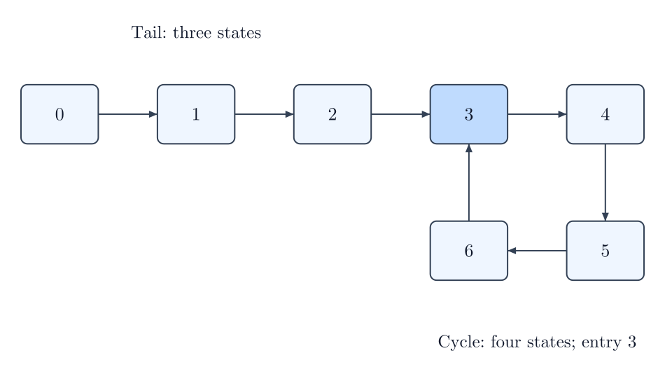
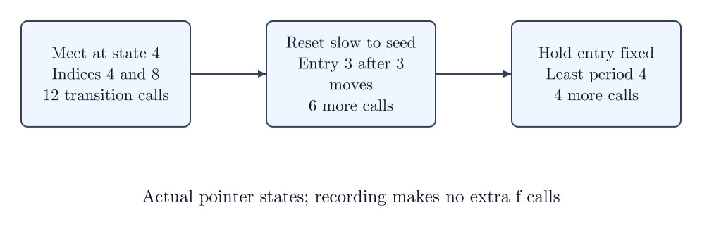
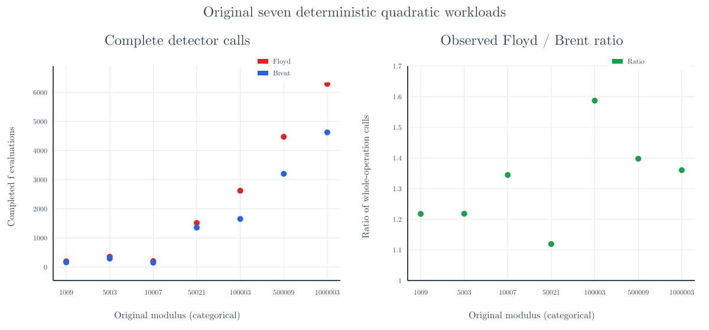
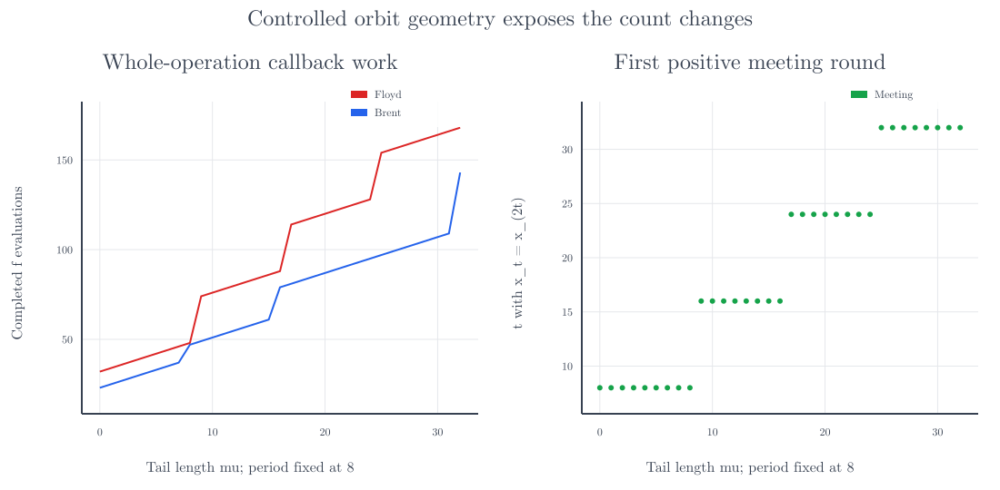
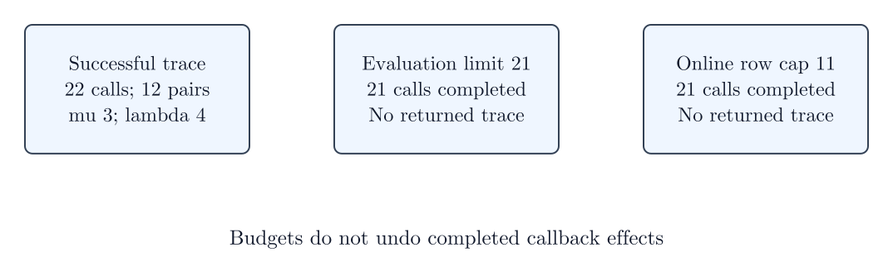

Floyd's tortoise and hare: actual meetings, entry recovery and work
Abstract
Iterating a deterministic function on a finite state space eventually enters a cycle. Floyd's detector finds the least tail length and period using a constant number of state variables. Its slow and fast pointers first meet, then recover the entry and measure the period. This report preserves the original seven-state rho graph and seven quadratic modular workloads, records actual pointer pairs from the native kernel, and distinguishes completed transition counts from runtime or random-map claims. Checked budgets and owned traces expose the practical API contract.
The orbit, not the whole transition graph
Write x_i=f^i(x_0). Determinism makes every state after the first repeated value repeat in the same order. The least entry index mu is nonnegative; the least period lambda is positive. The orbit has mu distinct tail states followed by lambda distinct cycle states. The answer depends on x_0, even when the complete transition function contains other disconnected cycles.
The name tortoise and hare refers to the detection pair x_t and x_(2t). This is cycle finding for a function, not the all-pairs shortest-path algorithm also named for Floyd. Brent's 1980 paper explicitly describes the detector as attributed to Floyd by Knuth: [author-hosted paper](https://maths-people.anu.edu.au/brent/pd/rpb051i.pdf).
The first program preserves the original successor table [1,2,3,4,5,6,3], now obtained from the native rho fixture. The seven-state diagram draws that table directly. The ordinary Floyd and Brent results agree on tail length three and period four.
#include <dm/dm.hpp>
namespace dm=datamunge;
int main(){
std::filesystem::create_directories("build");
const auto next=dm::algorithms::rho_successors(3,4);const dm::algorithms::CycleFunction f=[&](auto x){return next.at(x);};
const auto a=dm::algorithms::floyd_cycle_work(0,f),b=dm::algorithms::brent_cycle_work(0,f);
std::print("Original rho: Floyd mu {}; lambda {}; entry {}; evaluations {}.\n",a.result.mu,a.result.lambda,a.entry,a.evaluations);
std::print("Original rho: Brent mu {}; lambda {}; entry {}; evaluations {}.\n",b.result.mu,b.result.lambda,b.entry,b.evaluations);
std::print("Native orbit prefix: {}.\n",dm::algorithms::iterate_states(0,f,11));
const std::vector<dm::graphics::DiagramPoint> positions{{-3,0},{0,0},{3,0},{6,0},{9,0},{9,-3},{6,-3}};
dm::graphics::Diagram d(65,1100);dm::graphics::DiagramNodeStyle style;style.width=1.7;style.height=1.3;style.font_size=26;
for(std::size_t i=0;i<next.size();++i){auto node_style=style;if(i==a.entry)node_style.fill={191,219,254};d.node(std::to_string(i),positions[i],std::to_string(i),node_style);}
for(std::size_t i=0;i<next.size();++i)d.edge(std::to_string(i),std::to_string(next[i]));
d.text({0,1.8},"Tail: three states",25).text({7.5,-5},"Cycle: four states; entry 3",25).save_svg("build/floyd_graph.svg");
if(a.result.mu!=3||a.result.lambda!=4||b.result.mu!=3||b.result.lambda!=4)throw std::runtime_error("original rho");
}Original rho: Floyd mu 3; lambda 4; entry 3; evaluations 22. Original rho: Brent mu 3; lambda 4; entry 3; evaluations 17. Native orbit prefix: [0, 1, 2, 3, 4, 5, 6, 3, 4, 5, 6].

A fixture table uses storage proportional to its states; the detector's auxiliary state remains constant. The function can instead compute successors without storing a table. Instrumentation may count calls, provided the returned successor still depends only on the state. A callback whose answer changes on repeated equal inputs does not satisfy the cycle-finding contract.
Three phases from the actual kernel
In detection, advance the tortoise once and the hare twice before the first equality test, then repeat. The implementation preserves the original repeated evaluation of f(x_0): it does not reuse the tortoise's first result for the hare. Thus even a fixed point takes three detection calls. After a meeting, reset only the tortoise to x_0 without evaluating f; advance both once until they agree, obtaining mu and the entry. Finally hold the tortoise at that entry and walk the hare once around, obtaining lambda.
The trace records each actual pair before its equality test, including no-call phase-entry pairs. Orbit indices distinguish equal state labels reached at different times. They are not counts of unique states: a meeting at indices t and 2t need not be the entry, and its gap need not be the least period.
#include <dm/dm.hpp>
namespace dm=datamunge;
int main(){
std::filesystem::create_directories("build");
const auto next=dm::algorithms::rho_successors(3,4);const auto t=dm::algorithms::floyd_cycle_trace(0,[&](auto x){return next.at(x);});
std::print("| phase | progress | tortoise index | hare index | tortoise state | hare state | completed calls |\n| --- | ---: | ---: | ---: | ---: | ---: | ---: |\n");
std::size_t meeting_index=0;
for(std::size_t i=0;i<t.steps.size();++i){const auto&r=t.steps[i];const auto phase=r.phase==dm::algorithms::CyclePhase::detect?"Detect":r.phase==dm::algorithms::CyclePhase::locate?"Locate":"Measure";
std::print("| {} | {} | {} | {} | {} | {} | {} |\n",phase,r.progress,r.tortoise_index,r.hare_index,r.tortoise,r.hare,r.evaluations);if(r.phase==dm::algorithms::CyclePhase::detect)meeting_index=i;}
const auto&meet=t.steps[meeting_index];const auto&w=t.work;
std::print("\nActual phase calls: detection {}; entry recovery {}; period measurement {}; total {}; equality tests {}; recorded pairs {}.\n",w.detection_evaluations,w.entry_evaluations,w.period_evaluations,w.evaluations,w.comparisons,t.steps.size());
dm::graphics::Diagram d(60,1100);dm::graphics::DiagramNodeStyle style;style.width=4;style.height=2.5;style.font_size=23;
d.node("detect",{0,0},std::format("Meet at state {}\nIndices {} and {}\n{} transition calls",meet.tortoise,meet.tortoise_index,meet.hare_index,w.detection_evaluations),style)
.node("locate",{5.8,0},std::format("Reset slow to seed\nEntry {} after {} moves\n{} more calls",w.entry,w.result.mu,w.entry_evaluations),style)
.node("measure",{11.6,0},std::format("Hold entry fixed\nLeast period {}\n{} more calls",w.result.lambda,w.period_evaluations),style)
.edge("detect","locate").edge("locate","measure").text({5.8,-2.9},"Actual pointer states; recording makes no extra f calls",25).save_svg("build/floyd_phases.svg");
}| phase | progress | tortoise index | hare index | tortoise state | hare state | completed calls |
|---|---|---|---|---|---|---|
| Detect | 1 | 1 | 2 | 1 | 2 | 3 |
| Detect | 2 | 2 | 4 | 2 | 4 | 6 |
| Detect | 3 | 3 | 6 | 3 | 6 | 9 |
| Detect | 4 | 4 | 8 | 4 | 4 | 12 |
| Locate | 0 | 0 | 8 | 0 | 4 | 12 |
| Locate | 1 | 1 | 9 | 1 | 5 | 14 |
| Locate | 2 | 2 | 10 | 2 | 6 | 16 |
| Locate | 3 | 3 | 11 | 3 | 3 | 18 |
| Measure | 1 | 3 | 4 | 3 | 4 | 19 |
| Measure | 2 | 3 | 5 | 3 | 5 | 20 |
| Measure | 3 | 3 | 6 | 3 | 6 | 21 |
| Measure | 4 | 3 | 7 | 3 | 3 | 22 |
Actual phase calls: detection 12; entry recovery 6; period measurement 4; total 22; equality tests 12; recorded pairs 12.

Why the meeting and reset work
Before the tail ends, each tail value occurs only once on the orbit, so x_t cannot equal a later x_(2t). Within the cycle, equality of those two values means their index difference t is divisible by lambda. Therefore the first positive meeting round is
Since t is a cycle multiple, the hare at x_(2t) has the same cycle offset as x_t. Resetting the tortoise to x_0 and advancing both k steps yields x_k and x_(2t+k). For k less than mu one pointer is in the unique tail; at k=mu both are the entry. The final walk returns to the fixed entry after exactly the least positive lambda.
For this implementation, each detection round costs three completed calls, each entry move costs two, and measurement costs lambda. The whole-operation count is
This derivation includes the two recovery phases; it is not just the meeting-search count. It gives O(mu+lambda) callback invocations and equality tests. Actual runtime also includes callback cost, integer checks, comparisons and control overhead.
Preserve the seven quadratic workloads
The original experiment iterates g(x)=(x squared+1) modulo m from seed 2. Each callback
now uses quadratic_cycle_step, which evaluates the mathematical polynomial with
widened arithmetic, avoiding uint64 square/add wrap. The seven original moduli are
small enough that their historical expression was already safe, so every answer and
call count remains exact. The native work summaries supply the counts directly.
#include <dm/dm.hpp>
namespace dm=datamunge;
int main(){
std::filesystem::create_directories("build");
std::vector<double> x,fc,bc,ratios;std::vector<std::string> labels;
std::print("| modulus | mu | lambda | mu+lambda | Floyd detect | Floyd locate | Floyd measure | Floyd total | Brent total | ratio |\n| ---: | ---: | ---: | ---: | ---: | ---: | ---: | ---: | ---: | ---: |\n");
for(std::uint64_t m:{1009u,5003u,10007u,50021u,100003u,500009u,1000003u}){
const dm::algorithms::CycleFunction f=[=](auto value){return dm::algorithms::quadratic_cycle_step(value,m);};const auto a=dm::algorithms::floyd_cycle_work(2,f),b=dm::algorithms::brent_cycle_work(2,f);const double ratio=double(a.evaluations)/double(b.evaluations);
std::print("| {} | {} | {} | {} | {} | {} | {} | {} | {} | {:.2f} |\n",m,a.result.mu,a.result.lambda,a.result.mu+a.result.lambda,a.detection_evaluations,a.entry_evaluations,a.period_evaluations,a.evaluations,b.evaluations,ratio);
x.push_back(double(x.size()));fc.push_back(double(a.evaluations));bc.push_back(double(b.evaluations));ratios.push_back(ratio);labels.push_back(std::to_string(m));
if(a.result.mu!=b.result.mu||a.result.lambda!=b.result.lambda)throw std::runtime_error("quadratic agreement");
}
auto counts=dm::graphics::RPlot::create();counts.points(x,fc,"Floyd",{220,38,38},5).points(x,bc,"Brent",{37,99,235},5).x_tick_labels(labels).title("Complete detector calls").xlab("Original modulus (categorical)").ylab("Completed f evaluations").legend({"Floyd","Brent"},{{220,38,38},{37,99,235}});
auto relative=dm::graphics::RPlot::create();relative.points(x,ratios,"Ratio",{22,163,74},5).x_tick_labels(labels).ylim(1,1.7).title("Observed Floyd / Brent ratio").xlab("Original modulus (categorical)").ylab("Ratio of whole-operation calls");
dm::graphics::RLayout::create(1,2).add(counts).add(relative).size(1200,560).title("Original seven deterministic quadratic workloads").fit_panels().save_svg("build/floyd_original.svg");
}| modulus | mu | lambda | mu+lambda | Floyd detect | Floyd locate | Floyd measure | Floyd total | Brent total | ratio |
|---|---|---|---|---|---|---|---|---|---|
| 1009 | 0 | 49 | 49 | 147 | 0 | 49 | 196 | 161 | 1.22 |
| 5003 | 50 | 63 | 113 | 189 | 100 | 63 | 352 | 289 | 1.22 |
| 10007 | 39 | 5 | 44 | 120 | 78 | 5 | 203 | 151 | 1.34 |
| 50021 | 85 | 336 | 421 | 1008 | 170 | 336 | 1514 | 1353 | 1.12 |
| 100003 | 496 | 74 | 570 | 1554 | 992 | 74 | 2620 | 1651 | 1.59 |
| 500009 | 630 | 459 | 1089 | 2754 | 1260 | 459 | 4473 | 3201 | 1.40 |
| 1000003 | 1173 | 116 | 1289 | 3828 | 2346 | 116 | 6290 | 4625 | 1.36 |

These seven measured ratios span 1.12 to 1.59. They are deterministic work observations, not timings, a universal ratio interval, or proof of square-root growth with modulus. A random-function model is an additional assumption; a quadratic map selected once per modulus does not sample that model. The modulus alone does not determine the orbit's tail and period.
The polynomial is inspired by the iteration in [Pollard's 1975 paper](https://www.cs.cmu.edu/afs/cs/academic/class/15451-f11/www/lectures/lect1122_Pollard.pdf), which illustrates a minus-one polynomial and uses additional difference products and gcd tests to find factors. Our plus-one transition and exact-state cycle detectors do not perform that factorization procedure. Their full-state cycle lengths cannot be read as the number of calls needed to discover a prime factor.
Change the tail while holding the period fixed
Controlled rho fixtures isolate geometry from the choice of modulus. With period eight, the first meeting t jumps to the next positive multiple of eight as the tail crosses that boundary. Entry recovery adds two calls per extra tail state. The next program measures those stair steps directly; the curve is joined only because these are consecutive controlled integer inputs, not a fitted probabilistic trend.
#include <dm/dm.hpp>
namespace dm=datamunge;
int main(){
std::filesystem::create_directories("build");
std::vector<double> mu,fc,bc,meeting;
std::print("| tail mu | period | first meeting t | Floyd total | Brent total |\n| ---: | ---: | ---: | ---: | ---: |\n");
for(std::size_t tail=0;tail<=32;++tail){const auto next=dm::algorithms::rho_successors(tail,8);const dm::algorithms::CycleFunction f=[&](auto value){return next.at(value);};const auto a=dm::algorithms::floyd_cycle_work(0,f),b=dm::algorithms::brent_cycle_work(0,f);
mu.push_back(double(tail));fc.push_back(double(a.evaluations));bc.push_back(double(b.evaluations));meeting.push_back(double(a.detection_evaluations/3));if(tail%8==0||tail%8==1)std::print("| {} | {} | {} | {} | {} |\n",tail,a.result.lambda,a.detection_evaluations/3,a.evaluations,b.evaluations);
}
auto total=dm::graphics::RPlot::create();total.lines(mu,fc,"Floyd",{220,38,38},2).lines(mu,bc,"Brent",{37,99,235},2).title("Whole-operation callback work").xlab("Tail length mu; period fixed at 8").ylab("Completed f evaluations").legend({"Floyd","Brent"},{{220,38,38},{37,99,235}});
auto collision=dm::graphics::RPlot::create();collision.points(mu,meeting,"Meeting",{22,163,74},3).title("First positive meeting round").xlab("Tail length mu; period fixed at 8").ylab("t with x_t = x_(2t)");
dm::graphics::RLayout::create(1,2).add(total).add(collision).size(1100,540).title("Controlled orbit geometry exposes the count changes").fit_panels().save_svg("build/floyd_work.svg");
}| tail mu | period | first meeting t | Floyd total | Brent total |
|---|---|---|---|---|
| 0 | 8 | 8 | 32 | 23 |
| 1 | 8 | 8 | 34 | 25 |
| 8 | 8 | 8 | 48 | 47 |
| 9 | 8 | 16 | 74 | 49 |
| 16 | 8 | 16 | 88 | 79 |
| 17 | 8 | 24 | 114 | 81 |
| 24 | 8 | 24 | 128 | 95 |
| 25 | 8 | 32 | 154 | 97 |
| 32 | 8 | 32 | 168 | 143 |

The ordinary and work APIs retain O(1) auxiliary detector state. The owned Floyd trace retains O(mu+lambda) actual pairs, with no orbit replay or extra f calls. The default one-million-row cap is online because the period is unknown in advance. It checks each next row before its movement or phase reset, including the no-call locate-entry row. Zero disables only that cap; checked indices and vector limits remain. An evaluation budget is separate: it can stop between the individual calls of a tortoise/hare round. No partial trace is returned after either failure.
Budgets, fixed points, full-width arithmetic and ownership
The original rho needs exactly 22 completed calls and 12 recorded pairs. A limit of 21 calls stops before the twenty-second; a row cap of 11 stops before its last measurement pair and also leaves 21 calls completed. A successful fixed point still costs four calls in total: three for detection and one to measure period one.
#include <dm/dm.hpp>
namespace dm=datamunge;
int main(){
std::filesystem::create_directories("build");
const auto next=dm::algorithms::rho_successors(3,4);const dm::algorithms::CycleFunction f=[&](auto value){return next.at(value);};
bool eval_stop=false,row_stop=false,empty=false,modulus=false;std::size_t eval_calls=0,row_calls=0;
try{dm::algorithms::floyd_cycle_trace(0,[&](auto x){++eval_calls;return f(x);},{21},0);}catch(const std::runtime_error&){eval_stop=true;}
try{dm::algorithms::floyd_cycle_trace(0,[&](auto x){++row_calls;return f(x);},{},11);}catch(const std::length_error&){row_stop=true;}
try{dm::algorithms::floyd_cycle_trace(0,{});}catch(const std::bad_function_call&){empty=true;}
try{dm::algorithms::quadratic_cycle_step(2,0);}catch(const std::invalid_argument&){modulus=true;}
const auto complete=dm::algorithms::floyd_cycle_trace(0,f,{22},12);
std::print("Exact admission: completed calls {}; actual pairs {}; mu {}; lambda {}.\n",complete.work.evaluations,complete.steps.size(),complete.work.result.mu,complete.work.result.lambda);
std::print("Evaluation budget21 stopped {}; completed calls {}; row cap11 stopped {}; completed calls {}.\n",eval_stop,eval_calls,row_stop,row_calls);
std::print("Empty callback rejected {}; zero modulus rejected {}.\n",empty,modulus);
const auto fixed=dm::algorithms::floyd_cycle_trace(42,[](auto x){return x;});std::print("Fixed point42: mu {}; lambda {}; calls {}; pairs {}.\n",fixed.work.result.mu,fixed.work.result.lambda,fixed.work.evaluations,fixed.steps.size());
const auto full=std::numeric_limits<std::uint64_t>::max();const auto residue=dm::algorithms::quadratic_cycle_step(full,full-58,full);
std::print("Full-width polynomial: state {}; constant {}; modulus {}; residue {}.\n",full,full,full-58,residue);
auto mutable_next=next;const auto owned=dm::algorithms::floyd_cycle_trace(0,[&](auto x){return mutable_next.at(x);});mutable_next.clear();std::print("After caller table cleared: owned entry {}; final pair {} / {}.\n",owned.work.entry,owned.steps.back().tortoise,owned.steps.back().hare);
dm::graphics::Diagram d(60,1100);dm::graphics::DiagramNodeStyle style;style.width=4.5;style.height=2.6;style.font_size=24;
d.node("exact",{0,0},std::format("Successful trace\n{} calls; {} pairs\nmu {}; lambda {}",complete.work.evaluations,complete.steps.size(),complete.work.result.mu,complete.work.result.lambda),style)
.node("calls",{6.2,0},std::format("Evaluation limit 21\n{} calls completed\nNo returned trace",eval_calls),style)
.node("rows",{12.4,0},std::format("Online row cap 11\n{} calls completed\nNo returned trace",row_calls),style)
.text({6.2,-3},"Budgets do not undo completed callback effects",25).save_svg("build/floyd_controls.svg");
if(!eval_stop||!row_stop||!empty||!modulus||eval_calls!=21||row_calls!=21||fixed.work.evaluations!=4)throw std::runtime_error("checked cycle controls");
}Exact admission: completed calls 22; actual pairs 12; mu 3; lambda 4. Evaluation budget21 stopped true; completed calls 21; row cap11 stopped true; completed calls 21. Empty callback rejected true; zero modulus rejected true. Fixed point42: mu 0; lambda 1; calls 4; pairs 3. Full-width polynomial: state 18446744073709551615; constant 18446744073709551615; modulus 18446744073709551557; residue 3422. After caller table cleared: owned entry 3; final pair 3 / 3.

The detectors borrow a nonempty deterministic uint64 callback only for the invocation. Callback exceptions propagate, and completed external effects are not undone. Owned records contain integer states and counters, so they survive destruction of a fixture table or callback capture. Empty callbacks reject before movement. Arithmetic counters and indices throw on overflow. Without a practical budget, even a finite state orbit can require an impractically long traversal.
quadratic_cycle_step accepts all uint64 states and constants, rejects modulus zero,
and returns zero for modulus one. Widening before the square matters: a wrapped
uint64 polynomial followed by a remainder can define a different map. That helper
is reusable independently of either detector.
All five complete editable programs call the canonical C++ APIs. Native figures are saved locally and copied into the report; no external dataset is required. Verification preserves original callback inputs and outputs, results and phase counts, compares exhaustive small maps with an independent first-repeat oracle, checks actual trace indices and call order, tests every budget boundary on representative orbits, and checks full-width polynomial residues with independent binary modular arithmetic.